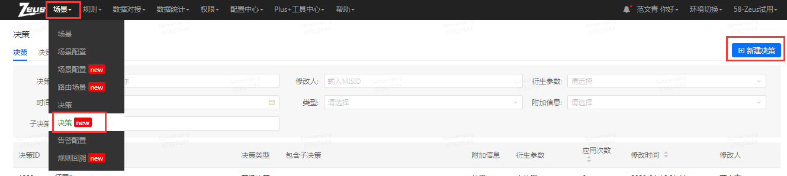
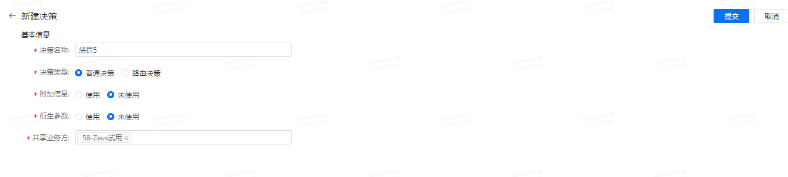
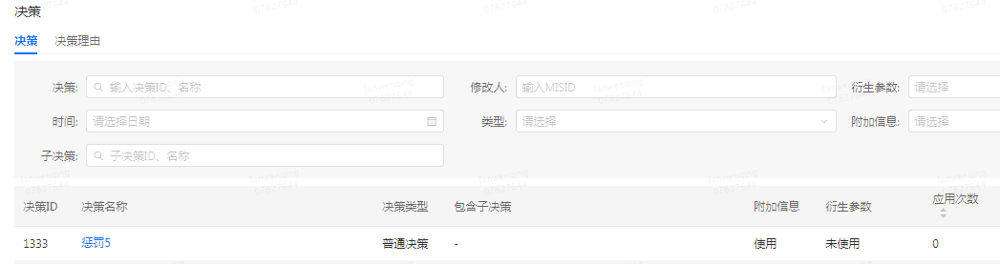

（废弃）说明：创建/修改决策
本文档废弃，新文档移步——说明：决策
一、背景
决策/decision：命中规则后需要做的动作，每一条scene_rule_conf配置产生一个决策；针对结果的处理动作，例如：通过、拦截、冻结账号、加入黑名单等；
决策理由：描述决策的具体细节，比如当决策是拦截时，其可能的原因包括拒绝快捷支付、拒绝绑卡等，决策理由指定了做出决策的具体原因。
二、操作说明
step1：入口
场景—>决策—>新建决策

step2：添加决策
在新建决策页面，填写决策名称、选择决策类型、选择是否使用附加信息、选择是否使用衍生参数，点击提交，成功后决策列表中出现创建的决策名称


step3：修改决策
同新建决策入口一样，进入决策页面，在决策列表中找到创建的决策，点击决策名称进入详情页面，可修改决策名称，是否使用附加信息，是否使用衍生参数，决策类型不可修改。